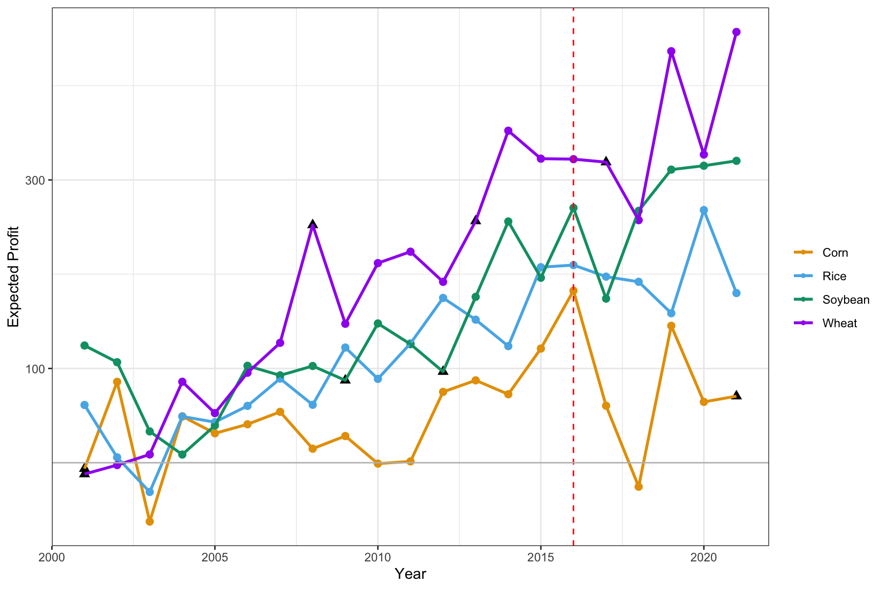
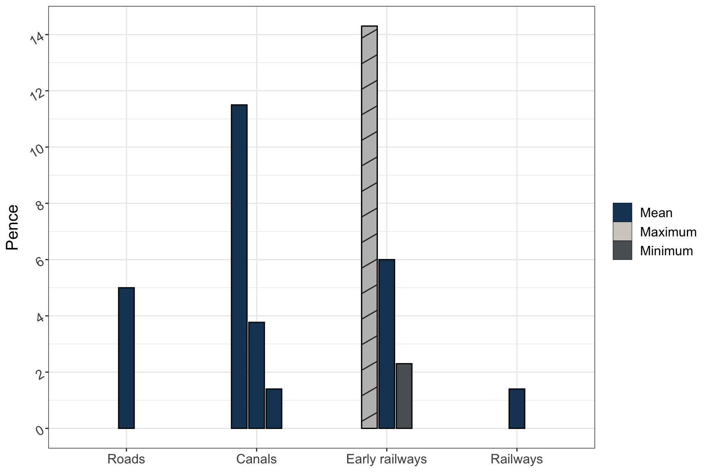

Chapter 2 R plot gallery
Multiple 95% Confidence Intervals
data.frame(value = rnorm(12, mean = 0, sd = 0.05)) %>%
mutate(lower = value - runif(12, 0, 0.4),
upper = value + runif(12, 0, 0.4),
REG = rep(c("A", "B", "C", "D"), 3),
est = mean(value),
index = rep(1:3, each = 4)) %>%
ggplot(aes(x = lower, xend = upper,
y = index + rep((0:(length(unique(REG))-1))/10, 3),
yend = index + rep((0:(length(unique(REG))-1))/10, 3),
color = REG)) +
geom_segment(lwd = 1, alpha = 0.5) +
scale_color_brewer(palette = "Set1") +
labs(y = "", x = "Reduction Rate") +
scale_y_continuous(breaks = 1:3,
labels = c("method 1", "method 2", "method 3")) +
geom_segment(aes(x = est, xend = est,
y = index - 0.1,
yend = index + (length(unique(REG)))/10)) +
geom_point(aes(x = value,
y = index + rep((0:(length(unique(REG))-1))/10, 3))) +
theme_bw() +
ggtitle("Reduction Rate of Treatment Compared With Placebo") +
theme(plot.title = element_text(hjust = 0.5),
text= element_text(size = 15))
Pirate Plot
require(yarrr)
yarrr::pirateplot(weight ~ Diet,
data = ChickWeight,
main = "Pirate plot",
inf.method = "ci",
theme = 2, # change theme, from 1 to 4
pal = "decision", # use piratepal(palette = "all") to check available palettes
bar.f.o = 0.2)
Beeswarm plot
require(ggbeeswarm)
ggplot(iris, aes(Species, Sepal.Length, colour = Species)) +
geom_violin(width = 0.5) +
geom_beeswarm() +
theme_classic() +
scale_color_brewer(palette = "Set1")
Bar Plot
dat2 <- data.frame(
categ = rep(c("Roads", "Canals", "Early railways", "Railways"), each = 3) %>% forcats::fct_inorder(),
group = rep(c("Maximum", "Mean", "Minimum"), 4),
fill = as.character(c(1,1,1,1,1,1, 2, 1, 3, 1,1,1)),
pattern = c(rep("N", 6), "D", rep("N", 5)),
record = c(NA, 5, NA, 11.5, 3.77, 1.4, 14.3, 6, 2.3, NA, 1.4, NA)
)
dat2 %>% dplyr::filter(is.na(record) == FALSE) %>%
ggplot() +
geom_bar_pattern(aes(x = categ, y = record, fill = fill, group = group, pattern = pattern),
width=0.4, position = position_dodge2(width=0.5, preserve = "single"),
color = "black",
stat = "identity",
pattern_density = 1.0,
pattern_fill = 'grey',
pattern_key_scale_factor = 0.5) +
scale_fill_manual(values = c("#1B4264","#D3CEC7","#5A6065"),
labels = c("Mean", "Maximum", "Minimum")) +
scale_pattern_manual(values = c(D = "stripe", N = "none"), guide = "none") +
guides(fill = guide_legend(override.aes = list(pattern = "none"),
title = NULL)) +
scale_y_continuous(breaks = c(0, 2, 4, 6, 8, 10, 12, 14)) +
labs(x = NULL, y = "Pence") +
theme_bw() +
theme(text = element_text(size = 15), axis.text.y = element_text(angle = 30, hjust = 1)) 
Multi-row x-axis labels
set.seed(1)
df=data.frame(year=rep(2009:2013,each=4),
quarter=rep(c("Q1","Q2","Q3","Q4"),5),
sales=40:59+rnorm(20,sd=5))
ggplot(data = df, aes(x = interaction(year, quarter, lex.order = TRUE),
y = sales, group = 1)) +
geom_line(colour = "blue") +
annotate(geom = "text", x = seq_len(nrow(df)), y = 34, label = df$quarter, size = 4) +
annotate(geom = "text", x = 2.5 + 4 * (0:4), y = 32, label = unique(df$year), size = 6) +
coord_cartesian(ylim = c(35, 65), expand = FALSE, clip = "off") +
theme_bw() +
theme(plot.margin = unit(c(1, 1, 4, 1), "lines"),
axis.title.x = element_blank(),
axis.text.x = element_blank(),
panel.grid.major.x = element_blank(),
panel.grid.minor.x = element_blank())Calendar
require(sugrrants)
require(lubridate)
data.frame(date = lubridate::ymd(strtrim(seq(ISOdate(2017,10,1), ISOdate(2018,2,28), "DSTday"),10)),
# or as.Date("2017-10-1") + 0:150
n = sample(1:100, size = 151, replace = T)) %>%
sugrrants::frame_calendar(x = 1, y = 1, date = date) %>%
ggplot(aes(x = .x, y = .y)) +
ggtitle("Daily sold units") +
theme_bw() +
theme(legend.position = "bottom",
plot.title = element_text(hjust = 0.5)) +
geom_tile(aes(x = .x+(1/13)/2, y = .y+(1/9)/2, fill = n), colour = "grey50") +
scale_fill_distiller(name = "", palette = "RdYlBu") -> p2.sale
sugrrants::prettify(p2.sale, label = c("label", "text", "text2")) # label: month and year; text: weekday at the bottom; text2: day of monthCorrelation Plot
require(corrplot)
cor(mtcars) %>%
corrplot::corrplot(., type = "upper", order = "hclust")
Table Visualization
require(formattable)
require(DT)
df <-
data.frame(id = 1:10,
name = c("Bob", "Ashley", "James", "David", "Jenny",
"Hans", "Leo", "John", "Emily", "Lee"),
age = c(28, 27, 30, 28, 29, 29, 27, 27, 31, 30),
grade = c("C", "A", "A", "C", "B", "B", "B", "A", "C", "C"),
test1_score = c(8.9, 9.5, 9.6, 8.9, 9.1, 9.3, 9.3, 9.9, 8.5, 8.6),
test2_score = c(9.1, 9.1, 9.2, 9.1, 8.9, 8.5, 9.2, 9.3, 9.1, 8.8),
final_score = c(9, 9.3, 9.4, 9, 9, 8.9, 9.25, 9.6, 8.8, 8.7),
registered = c(TRUE, FALSE, TRUE, FALSE, TRUE, TRUE, TRUE, FALSE, FALSE, FALSE),
stringsAsFactors = FALSE)
formattable(df,
list(age = color_tile("white", "orange"),
grade = formatter("span",
style = x ~ ifelse(x == "A", style(color = "green", font.weight = "bold"), NA) ),
area(col = c(test1_score, test2_score)) ~ normalize_bar("pink", 0.4),
final_score = formatter("span", style = x ~ style(color = ifelse(rank(-x) <= 3, "green", "gray")),
x ~ sprintf("%.2f (rank: %02d)", x, rank(-x))),
registered = formatter("span", style = x ~ style(color = ifelse(x, "green", "red")),
x ~ icontext(ifelse(x, "ok", "remove"), ifelse(x, "Yes","No")))
)
)| id | name | age | grade | test1_score | test2_score | final_score | registered |
|---|---|---|---|---|---|---|---|
| 1 | Bob | 28 | C | 8.9 | 9.1 | 9.00 (rank: 06) | Yes |
| 2 | Ashley | 27 | A | 9.5 | 9.1 | 9.30 (rank: 03) | No |
| 3 | James | 30 | A | 9.6 | 9.2 | 9.40 (rank: 02) | Yes |
| 4 | David | 28 | C | 8.9 | 9.1 | 9.00 (rank: 06) | No |
| 5 | Jenny | 29 | B | 9.1 | 8.9 | 9.00 (rank: 06) | Yes |
| 6 | Hans | 29 | B | 9.3 | 8.5 | 8.90 (rank: 08) | Yes |
| 7 | Leo | 27 | B | 9.3 | 9.2 | 9.25 (rank: 04) | Yes |
| 8 | John | 27 | A | 9.9 | 9.3 | 9.60 (rank: 01) | No |
| 9 | Emily | 31 | C | 8.5 | 9.1 | 8.80 (rank: 09) | No |
| 10 | Lee | 30 | C | 8.6 | 8.8 | 8.70 (rank: 10) | No |
Heatmap
ggplot(airquality, aes(Day, Month, fill = Temp)) +
geom_tile() +
scale_x_continuous(breaks = seq(1:31)) +
theme_bw() +
scale_fill_viridis_c(option = "A") # Example 2
set.seed(1234)
mydata <- matrix(rnorm(5*10), ncol = 10)
colnames(mydata) <- letters[1:10]
heatmap(mydata,
# Colv = NA, # Rowv = NA, # hide the clustering
main = "heatmap", col = cm.colors(256))
Compare Two Group Means
require(dabestr)
mydata <- iris[iris$Species %in% c("setosa", "versicolor"), ] %>%
mutate(Class = ifelse(Sepal.Length > 5.5, "Long", "Short"))
mytest <- dabest(mydata, Species, Petal.Width, # Compare Petal.Width for Species
idx = c("setosa", "versicolor"), # setosa is the control group
paired = FALSE)
mymean_diff <- mean_diff(mytest)
plot(mymean_diff, color.column = Class)